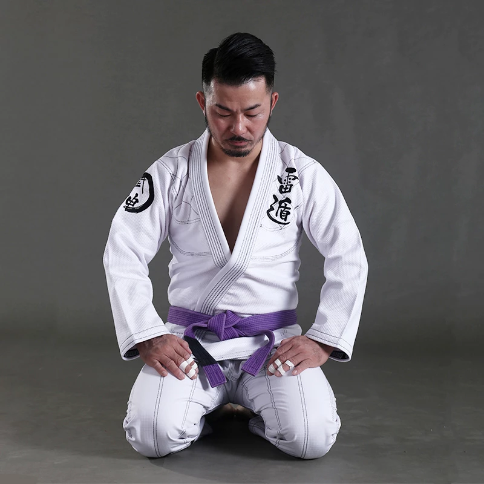

동천백산유술회(東天白山柔術會)
대전 둔산주짓수클럽
주짓수는 남녀노소 누구나 쉽고 재미있게 배울 수 있고, 실제 호신술과 실전 무술로써 검증된 운동입니다. 둔산 주짓수 클럽은 대한주짓수회 공인 인증 체육관이며, 주짓수 전문 프로그램을 평일, 주말 진행하고 있고, 초보자를 위한 디테일한 코치부터 기초체력훈련까지 만나볼 수 있습니다.
둔산주짓수 클럽은 운동을 사랑하는 누구, 체중조절을 원하는 누구, MMA 프로 파이터가 되는 누구에게든 문이 활짝 열려있습니다.
프로그램 소개
